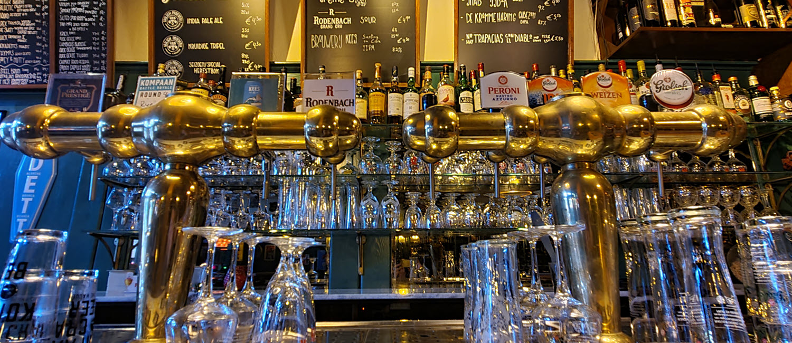
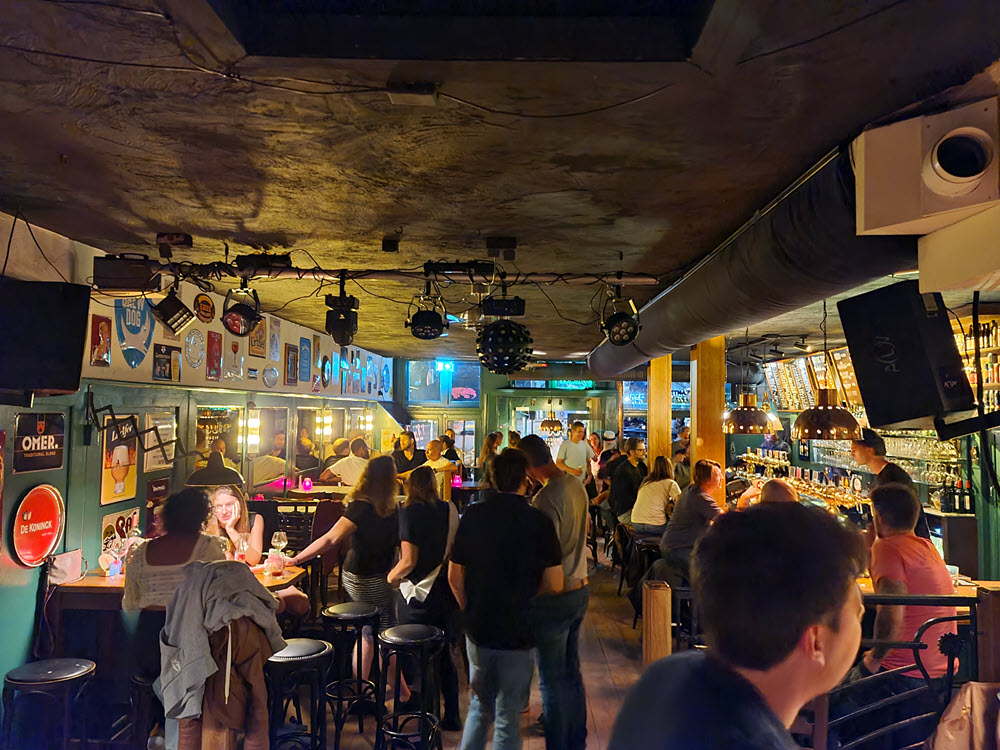
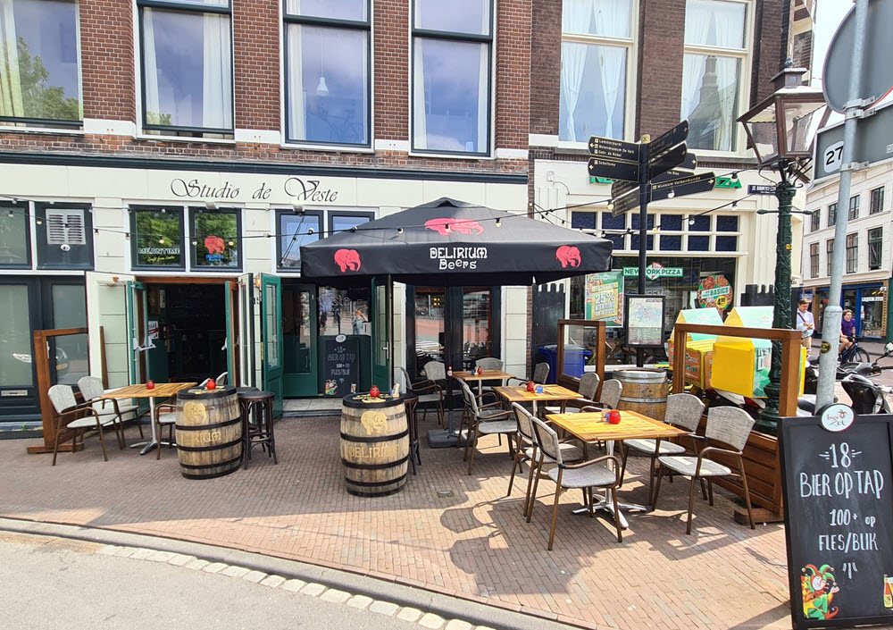
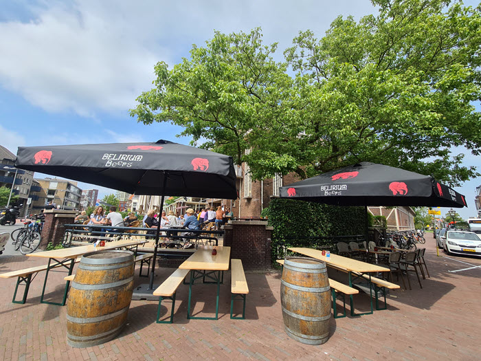
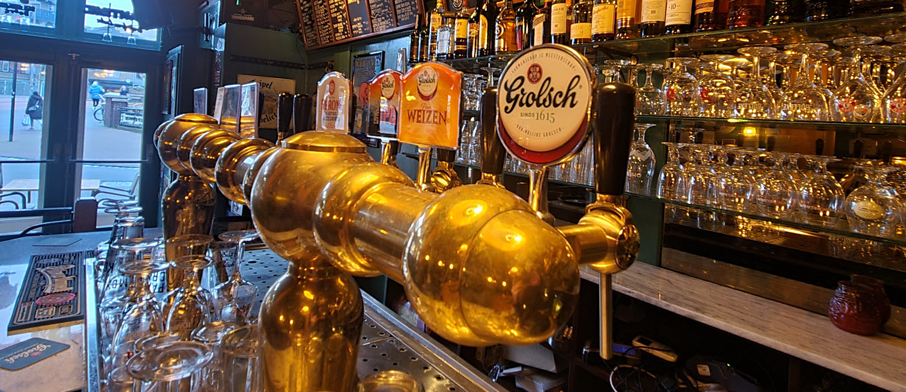
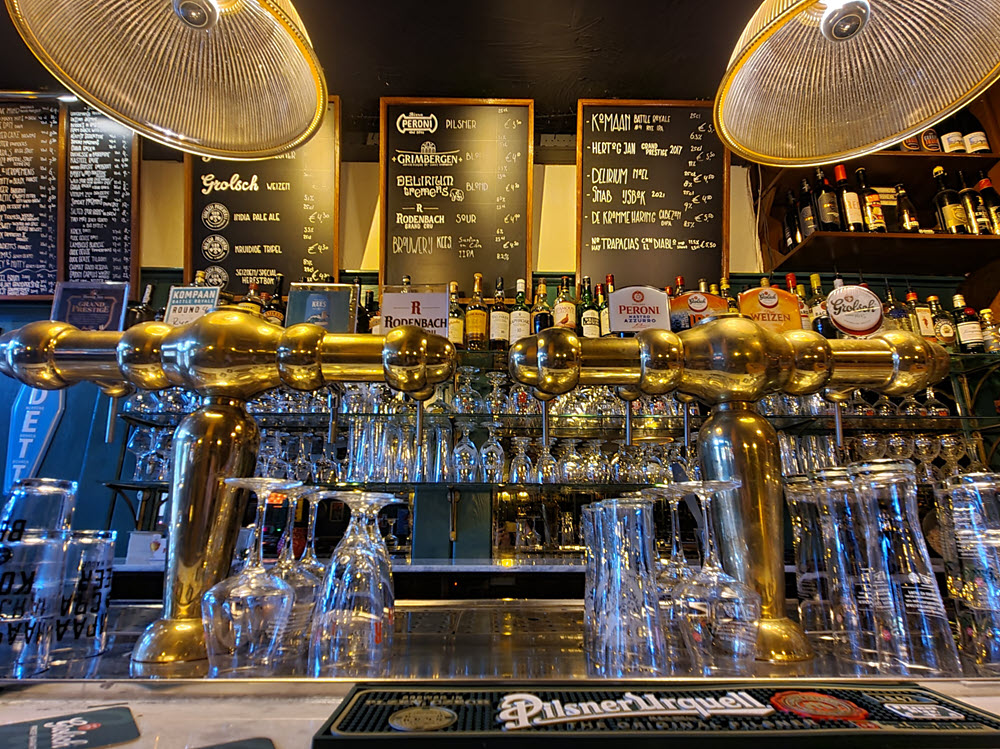

Hét biercafé van Leiden
Achttien tappunten en meer dan 200 wisselende bieren uit binnen- en buitenland. Midden in de Oude Morsch, vlak bij de Lammermarkt en een paar minuten lopen van Leiden Centraal.
Elke dag open tot 04.00
Bij De Veste draait het om bier. Van een frisse IPA of klassieke tripel tot een stevige stout, bijzondere geuze, weizen, blond of pils.
Het assortiment wisselt regelmatig en wordt met zorg samengesteld. Wekelijks nieuwe bieren op tap: van licht en fris tot zwaar en donker. Van lokaal Leids bier, om de hoek gebrouwen door de mannen van Pronck, tot bier uit Brazilië, Rome of Helsinki. En de Belgen ontbreken natuurlijk niet.
Kun je niet kiezen? Aan de bar helpen we je graag aan een bier dat bij je past. En voor de BOB staat er een mooie selectie alcoholvrije en alcoholarme bieren klaar.
Nu op tap
Een momentopname van 21 november. De tap wisselt wekelijks; de actuele kaart staat altijd op de bierkaart en natuurlijk aan de bar.
Op fles en blik
Naast de tap een ruime selectie in de koeling, ingedeeld per stijl:
- Lagers, wit, weizen & märzen
- Blond & tripel
- IPA & pale ale
- Kriek, wild ale & geuze
- Porter, stout & barrel aged
- Saison & farmhouse ale
- Dubbel, brown & winter ale
- Sour, fruit & gose
- Amber & red ale
- Cider
- Quadrupel & barleywine
- 0.0ish

Zondag live muziek
Iedere zondag is er vanaf 16.00 uur live muziek, en in het weekend kun je 's avonds ook terecht voor een dansje. Zo is De Veste niet alleen een plek voor bijzonder speciaalbier, maar ook voor een gezellige middag of avond in Leiden.
- Ma16.0004.00
- Di16.0004.00
- Wo16.0004.00
- Do16.0004.00
- Vr15.0004.00
- Za15.0004.00
- Zo16.0004.00Live muziek
Aan de bar, binnen of op het terras

Zonnig terras
Kom lekker in het zonnetje genieten van een biertje. Neem plaats aan een bistrosetje of aan een van de gezellige biertafels in de Oude Morsch.


Levendige binnenruimte
Binnen borrel je zittend aan tafel, staand aan een bartafel of aan de bar. Je voelt je al snel thuis.

Van Studio de Veste naar Bierlokaal de Veste
De Veste bestaat al meer dan honderd jaar. Het is niet al die jaren een biercafé geweest en het heeft meerdere namen gehad. Tot 2007 was het in handen van verschillende eigenaren, die er ieder hun eigen draai aan gaven.
Sinds 2007 is het in handen van een jonge, ambitieuze Leidse ondernemer. Hij noemde het Studio de Veste, en vanuit zijn passie voor speciaalbier en muziek werkte hij dag en nacht om er het gezelligste muziekcafé van te maken.
Tijdens de coronacrisis (2020–2021) moest ook De Veste dicht. Die tijd is gebruikt om samen met het team Studio de Veste om te bouwen tot Bierlokaal de Veste: een nieuw concept, een nieuw interieur en speciaalbier uit de hele wereld.
Wist je dat...
Een hapje erbij
Voor borrelhapjes en borrelbites werkt De Veste samen met Stadscafé van der Werff. Je hoeft dus niet van je plek als je zit te genieten van een speciaalbiertje.
Teamuitjes in Leiden
Voor groepsactiviteiten en teamuitjes werkt De Veste samen met Aloha Events. Zij organiseren binnen- en buitenactiviteiten voor groepen van 12 tot 100 personen in Leiden en omgeving. Sluit je uitje af met een speciaalbiertje bij De Veste.
Kom snel eens langs
Bierlokaal de Veste2e Binnenvestgracht 15
2312 BZ Leiden
06-13559990
info@bierlokaaldeveste.nl
Instagram: @bierlokaaldeveste
Bereikbaarheid
Met de trein: loop vanaf Leiden Centraal rechtdoor; binnen twee minuten sta je binnen.
Met de auto: parkeer in Parkeergarage Morspoort of Parkeergarage Lammermarkt, allebei op een minuut lopen.